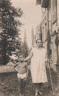
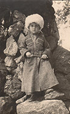
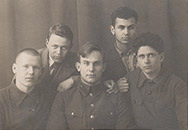

Школа и военное время
Ниловна
Теханико-математический
факультет МГУ
существования
механико-математического
факультета МГУ в его
стенах было подготовлено
свыше 20 тысяч
высококлассных
специалистов в самых
различных областях
математики и механики;
около 4 тыс. его
выпускников стали
кандидатами и докторами
наук.
-

С мамой
-

В детстве
-

С товарищами
-
В молодости
Богуславский Иосиф Аркадьевич, мой папа, родился в Полтаве или в её окрестностях но его детство прошло в селе Богородском Московской области. В семье его все звали Юзик. Его родители, мои бабушка Вера
и дедушка Аркадий, туда переехали с Украины. По рассказам сестёр дедушки их семья пострадала от еврейских погромов. Отец дедушки
был убит во время одного из них и им пришлось разыскивать его тело в
груде тел погибших во время этого ужасного нападения.
... Со свойственным ему ироническим юмором папа говорил что в
детстве он был "обыкновенным балбесом" и учёбой не очень
интересовался. Вероятно ему было просто слишко легко и поэтому не
интересно в школе. Он заинтересовался математикой после того как
начал читать научно популярные книжки Якова Перельмана. Папа с ним
даже переписывался посылал свои решения задачек из этих книг и
обнаружил большие способности к матемaтике.
После окончания школы он решил поступать в МГУ на МЕХМАТ, самый
лучший математический факультет в стране где преподавали всемирно
известные математики. Он туда успешно поступил, а во время
экзаменов произошла такая история. Он был очень удивлён и огорчён
когда обнаружил что получил низкую оценку по математике. Он подал на
Аппеляцию и преподаватель с которым он обсуждал экзаменационную
работу вдруг понял что задача была решена правильно, но не обычным
а оригинальным способом. Он поздравил папу с таким успехом и пожал
ему руку.
Вскоре после начала Великой Отечественной войны все молодые
мужчины с папиного факультета были переведены в Военную
Академию имени Жуковского которую он успешно закончил. В боевых
действиях ему к счастью участвовать почти не пришлось хотя он и
рассказывал что когда он служил на прифронтовом военном аэродроме
приходилось попадать под вражеский обстрел.
Готовили штурмовики Ил-2 к боевым вылетам: подвешивали
авиабомбы, заряжали пушки «Швак». В академии Богуславский и
закончил войну, курсантом служил на полигоне где-то под Москвой.
Тогда же он женился в первый раз, сразу после войны. Жену его звали
Евгения Ниловна.
Он о ней всегда хорошо отзывался, говорил, что ему с женами повезло,
и первая была неплохая, и вторая — моя мама. У них была дочка
Надежда. Надежда сейчас в Америке с семьей, с мужем, с двумя уже
совсем взрослыми детьми, у них, кажется, свои семьи.
В конце войны он служил на военно-воздушной базе в Луганске где
преподавал навигацию новым военным лётчикам. Весной 1945 года
незадолго до окончания войны он познакомился в моей мамой Женей
Бондаревой. Они были красивые и молодые ему было 23 а ей 20 лет.
Поздней осенью этого же года они поженились. Через несколько
месяцев после этого папе удалось демобилизоваться и он с молодой
женой уехал в Москву к родителям.